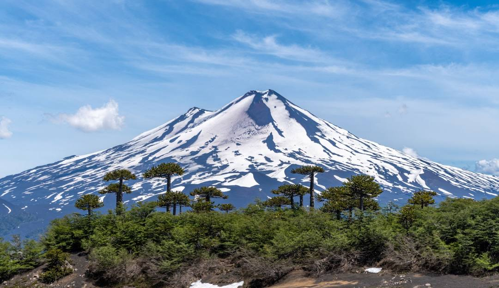
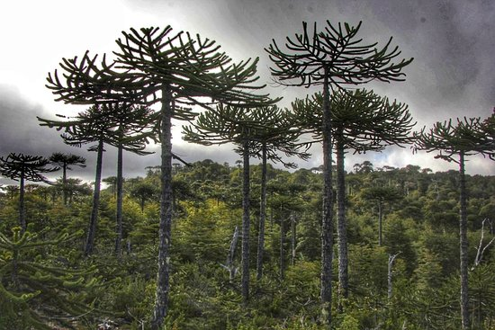
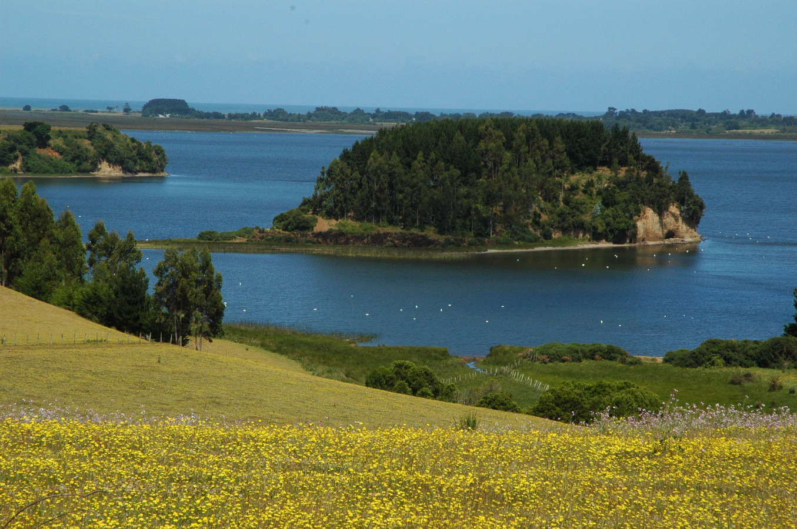
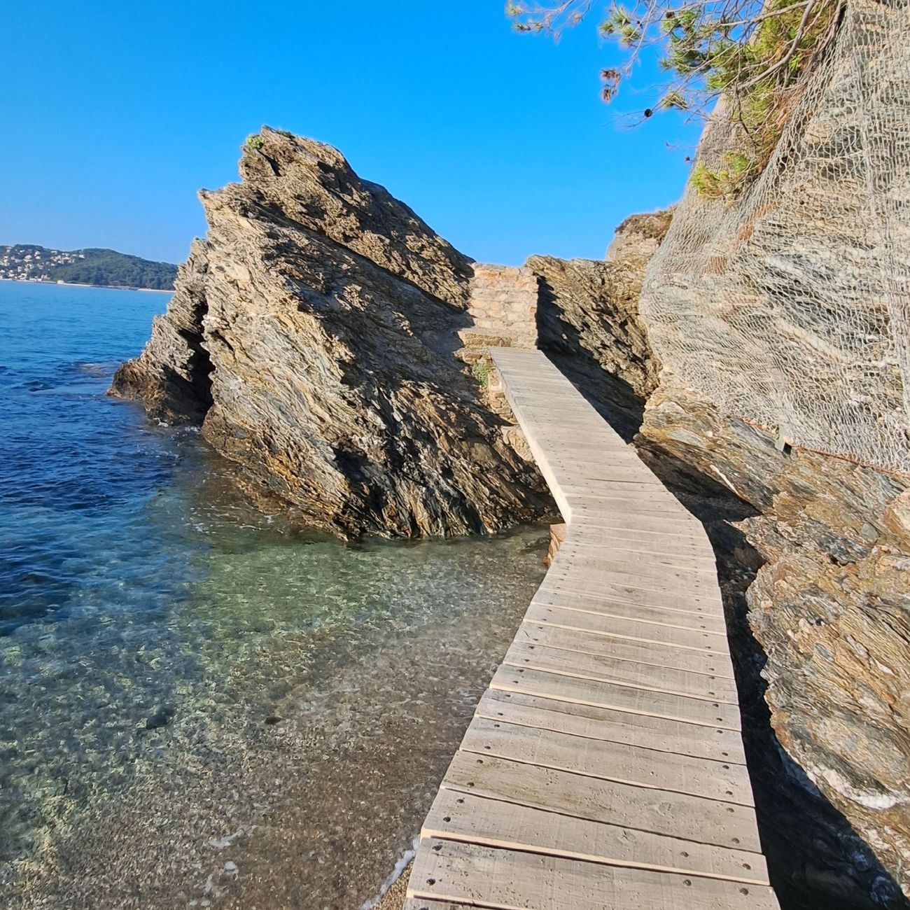
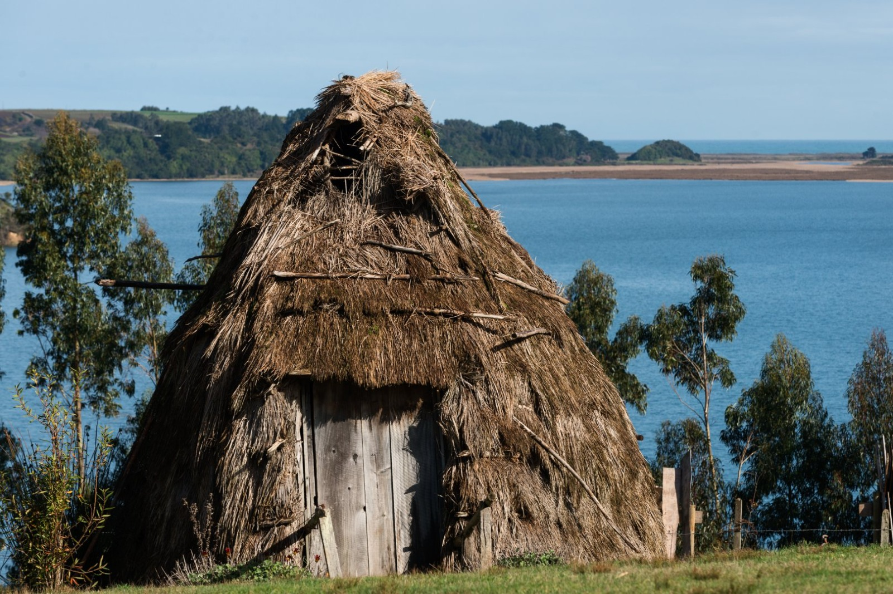
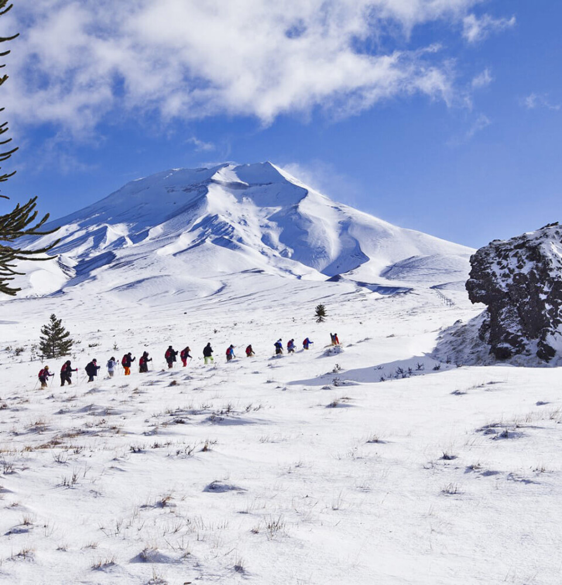
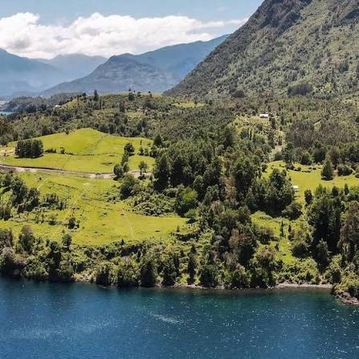
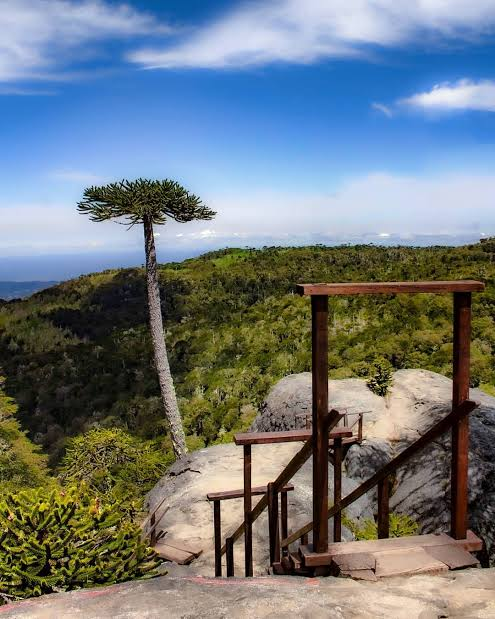

Araucanía Andina
Circuito Volcán Llaima
- Alta
- 2 días
- 28 km
CATÁLOGO
Explora todas las opciones disponibles en la región.


Araucanía Andina

Nahuelbuta

Araucanía Lacustre

Araucanía Costera

Temuco

Araucanía Andina

Araucanía Lacustre

Nahuelbuta
Araucanía Andina
Un recorrido de alta montaña que rodea el volcán Llaima, uno de los más activos de Sudamérica. Atraviesa paisajes de lava solidificada, bosques de araucarias y miradores únicos con vistas al Parque Nacional Conguillío.